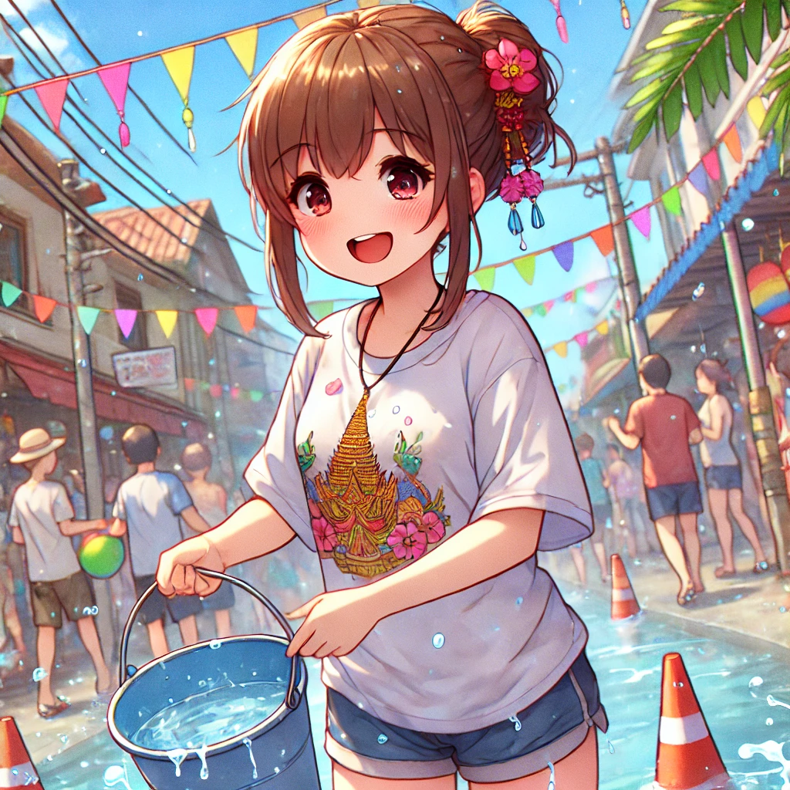

自己紹介
ゆっこ・こやぎ
- できること
- 趣味
- 期待すること
- まず自分のスキルを上げるのが1番ですが、サポートし合って皆で伸びていける環境になればいいなと思ってます！
ちょこちゃんが書いてくれてた、技術者集団を目指すのも素敵だと思いました🥰
- 目指す姿
- 誰かの為になる事をする
- 効率良くタスクを回せるように
- ロジックとエラーで詰むと中々進めなくなる時の解決策を素早く見つけられるようになりたい
- ひとこと
- まだまだ知識足りてないですが、皆で刺激しあって頑張りたいです🥰
よろしくお願いします✨
Warpcastはこちら
